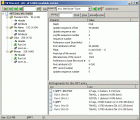
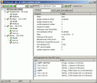
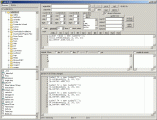

english
TrafMon 1.5

TrafMon options und zwei Beispiel-Layouts
trafmon15_bin.zip - 613 kB (
trafmon15_src.zip - 698 kB (Delphi 2010) (
TrafMon.txt
DiskBuddy 0.8
 

{kind=link}
DiskBuddy Haupt-Fenster und ein NTFS MFT-Datensatz
diskbuddy08_bin.zip - 759 kB (
diskbuddy08_src.zip - 1,334 kB (
DiskBuddy.txt
SonoGram 3.5

SonoGram zeigt grade den Song 'Equation' von Aphex Twin
old version screenshot
{kind=link}
sonogram35_bin.zip - 340 kB (
sonogram35_src.zip - 1.17 MB (
readme.txt
Defragger 3.9alpha

Defragger in Aktion
defragger39a_bin.zip - 113 kB (
defragger39a_src.zip - 142 kB (
readme.txt
Kopy 2.0

kopy in Aktion bei einer Fehlerhaften CD
- Kopier Programm mit einstellbarem Cache
- Cache-Groesse waehrend des Kopier-Vorgangs anpassbar
- fortsetzen teilweise kopierter Dateien
- beliebige Wiederholungen bei schwer lesbaren Sektoren (z.B. bei zerkratzten CDs)
- Restdauer/Geschwindigkeitsanzeige/Geschwindigkeitsgraph
- ueberspringen fehlerhafter Bloecke/NULL-Bloecke schreiben
- kopiert mit Unterverzeichnissen, unterstuetzt Standard-Platzhalter wie "*.exe" und "?.exe"
- physikalisches Loeschen (ueberschreiben) von Dateien (mehr ueber das physikalische loeschen von dateien)
kopy20_src.zip - 18 kB (delphi7) (
readme.txt
AutoEditor 1.1
{kind=link}
AutoEditor mit etwas generiertem Java code
autoeditor11_bin.zip - 314 kB (
autoeditor11_src.zip - 353 kB (
readme.txt
RegSR 2.0

RegSR in Aktion
- Suchen und Ersetzen/Loeschen von Zeichenfolgen in der Windows-Registrier-Datenbank
- Schnelle Suche durch ueberspringen von gespiegelten Zweigen in der Registrierung
- zuerst wird gesucht, dann kann in der Ergebnisliste ausgewaehlt werden, welche Zweige/Namen/Werte ersetzt/geloescht werden
- suchen und ersetzen in den Registrierungs-Typen REG_SZ, REG_EXPAND_SZ, REG_MULTI_SZ
readme.txt
ExitWin 2.0

ExitWin in Aktion
- Windows herunterfahren/neustarten/abmelden oder zeitgesteuert herunterfahren
- per Dialog oder per Kommandozeile (exitwin.exe /?) aufrufen
- unter WinXP gibts das auch mit "shutdown /?"
exitwinsrc.zip - 13 kB (VB6) (
ColorConverter 2.0

Farb-Konverter in Aktion
- Farbkonverter von/nach vier Formaten
- Farben waehlen/aendern/anzeigen
- Formate: RGB(0..1) / RGB(0..255) / Hexadezimal / Windows-Farb-Wert(0..16777215)
- Formular zum Import in VBA (Excel/Word/Corel) oder VB6
colorconvsrc.zip - 6 kB (VBA) (
links
Sequoia View, WinDirStat
BartPE
PageDefrag
DVDisaster
Ninite multi installer
Teamviewer download
SysInternals